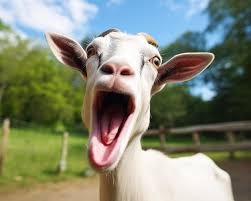
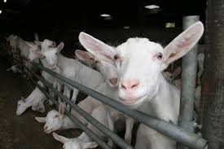
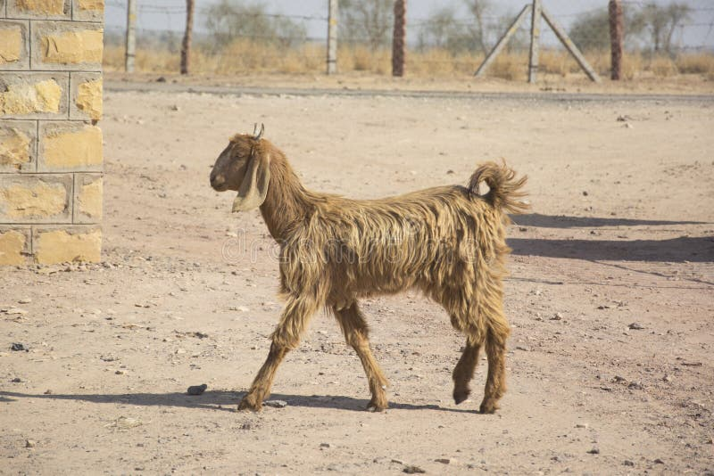
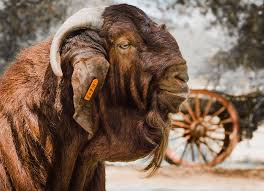
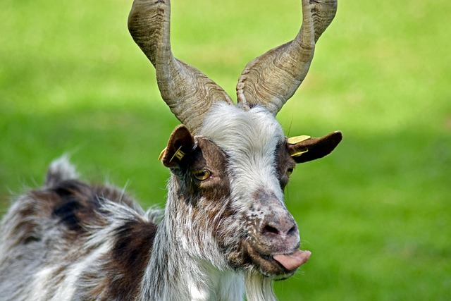

LES CHèVRES SAANEN 1862$(IL CHIE LAURA COMME CACA)

Originaire de la Suisse,
50 à 90 kg elles ont un fort développement
C'est la race laitière la plus répandue au monde C'est une excellente laitière. Elle produit en moyenne 900 litres de lait par lactation
LES CHèVRES NACHI 2005$

LES CHèVRES KALAHARI RED 6025 $

LES CHèVRES GIRGENTANA 503
